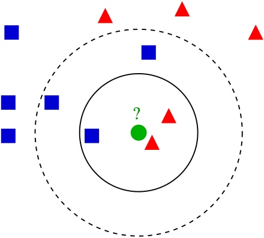
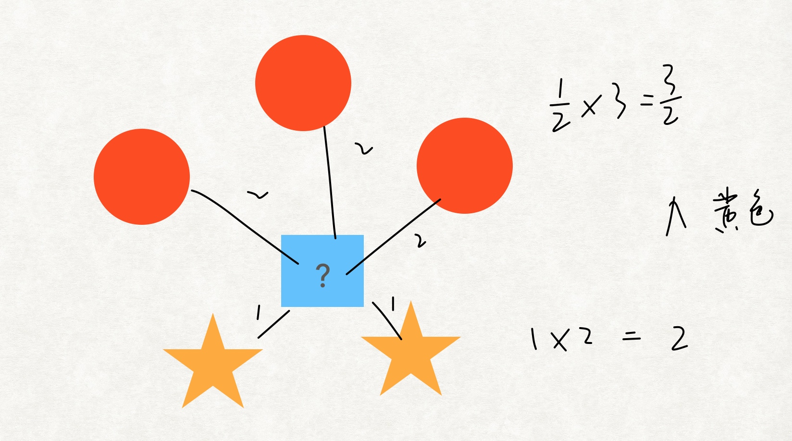
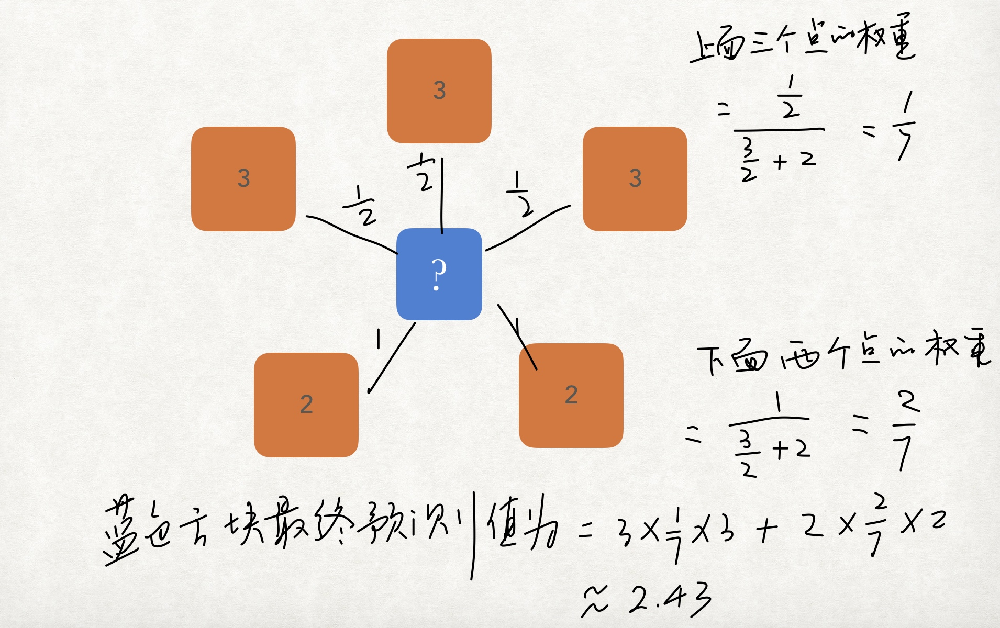
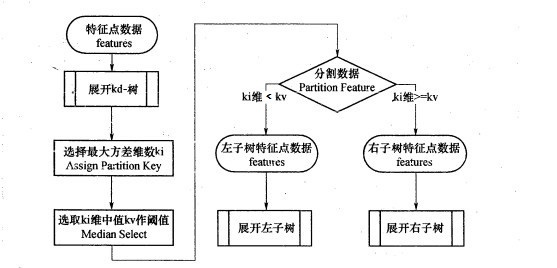
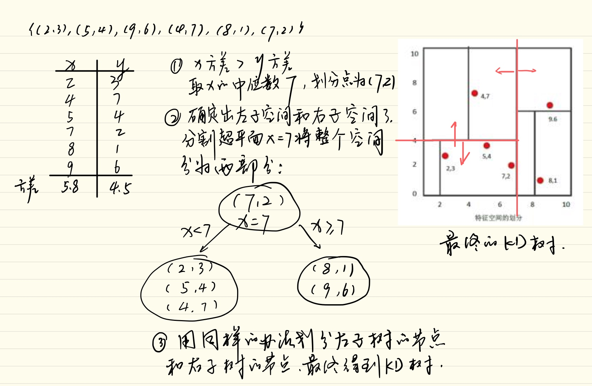
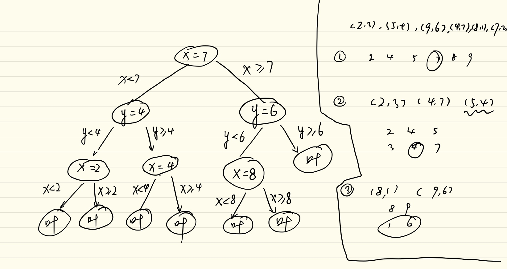
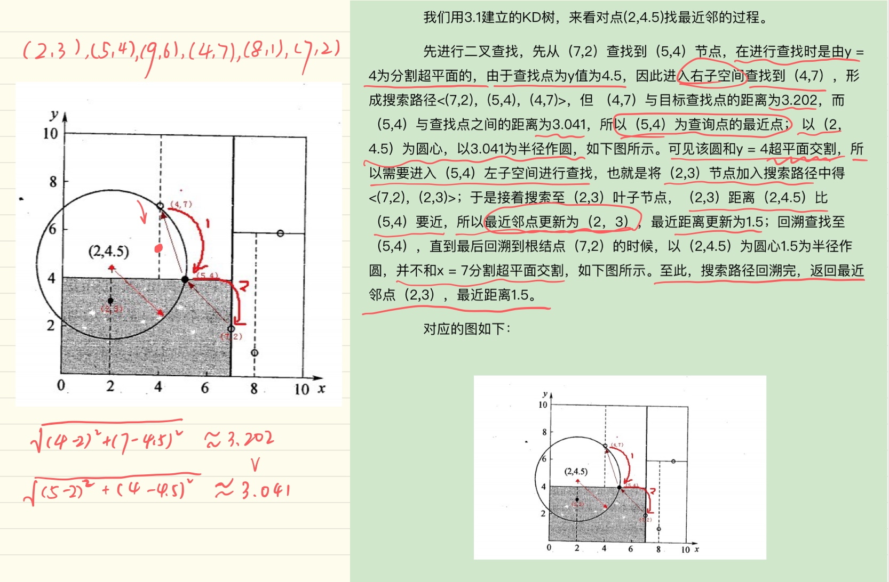
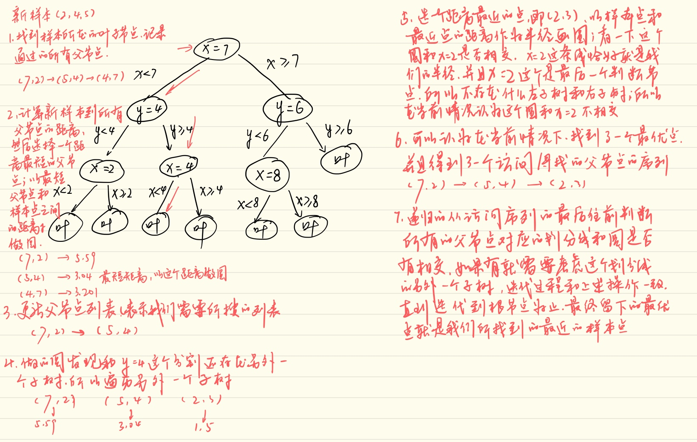

K近邻(K-nearst neighbors,KNN)是一种基本的机器学习算法,所谓K近邻,就是K个最近的邻居的意思,说的是每个样本都可以用它最接近的K个邻居来代表.
比如:判断一个人的人品,只需要观察与他来往最密切的几个人的人品好坏就可以得出,即,"近朱者赤,近墨者黑".
KNN算法既可以应用于分类应用中,也可以应用在回归应用中.KNN在做回归和分类的主要区别在于最后做预测的时候决策方式不同,KNN在分类预测时,一般采用多数表决法;而在做回归预测时,一般采用平均值法.
KNN算法原理
- 从训练集合中获取K个离待预测样本距离最近的样本数据;
- 根据获取得到的K个样本数据来预测当前待预测样本的目标属性值

如上图所示,绿色圆要被决定赋予那一个类呢,是红色三角形还是蓝色矩形?
- 如果K=3,由于红色三角形所占比例为2/3,绿色圆将被赋予红色三角形这个类.(多数投票)
- 如果K=5,由于蓝色四方形比例为3/5,因此绿色圆被赋予蓝色矩形.
KNN三要素
在KNN算法中,非常重要的主要是三个因素:
- K值的选择:对于K值的选择,一般根据样本分布选择一个较小的值,然后通过交叉验证来选择一个比较合适的最终值;当选择比较小的K值的时候,表示使用较小领域中的样本进行预测,训练误差会减小,但是会导致模型变得复杂,容易过拟合;当选择较大的K值的时候,表示使用较大领域中的样本进行预测,训练误差会增大,同时会使模型变得简单,容易导致欠拟合.
- 距离的度量:一般使用欧式距离(即,欧几里得距离);
- 决策规则:在分类模型中,主要使用多数表决法或者加权多数表决法;在回归模型中,主要使用平均值法或者加权平均值法.加权的时候,可以认为距离越近的权重也应该越大.
\[D(x,y) = \sqrt{(x_1-y_1)^2 + (x_2-y_2)^2 + ... + (x_n-y_n)^2} = \sqrt{\sum\limits_{i=1}^{n}(x_i-y_i)^2}\]
KNN预测规则
既然KNN算法既可以用在分类场景中,也可以用在回归场景中,那么针对不同的场景,KNN也有不同的预测规则
KNN分类预测规则
在KNN分类应用中,一般采用对数投票或者加权多数表决法.

多数表决法: 每个邻近样本的权重是一样的,也就是说最终预测的结果为出现类别最多的那个类,比如上图中蓝色矩形的最终类别为红色圆;
加权多数表决法:每个邻近样本的权重是不一样的,一般情况下采用权重和距离成反比的方式来计算,也就是说最终预测结果是出现权重最大的那个类别:比如上图中,假设三个红色圆点到预测样本点的距离均为2,两个黄色星到预测样本点距离为1,那么蓝色圆圈的最终类别为黄色.(\(\frac12*3 < 1*2\))
KNN回归预测规则
在KNN回归应用中,一般采用平均值法或者加权平均值法.

平均值法: 每个邻近样本的权重是一样的,也就是说最终预测的结果为所有邻近样本的目标属性值的均值;比如上图中,蓝色方块的最终预测值为\((3+3+3+2+2)/5=2.6\).
加权平均值法:每个邻近样本的权重是不一样的,一般情况下采用权重和距离成反比的方式来计算,也就是说在计算均值的时候进行加权操作;比如上图中,假设上面三个点到待预测样本点的距离均为2,下面两个点到待预测样本点距离为1.那么蓝色方块的最终预测值为2.43.
KNN算法实现方式
KNN算法的重点在于找出K个最近邻的点,主要方式有一下几种:
- 蛮力实现(brute):计算预测样本到所有训练集样本的距离,然后选择最小的K个距离即可得到K个最近邻点.缺点在于当特征数比较多,样本数比较多的时候,算法的执行效率比较低;
- KD树(kd_tree):KD树算法中,首先是对训练数据进行建模,构建KD树,然后再根据建好的模型来获取邻近样本数据.
- 除此之外,还有一些从kd_tree修改后的求解最邻近点的算法,比如:Ball Tree,BBF Tree,MVP tree等
接下来重点说一下KD树的构建过程
KD Tree
KD Tree是KNN算法中用于计算最近邻的快速,便捷构建方式.
当样本数据量少的时候,我们可以使用brute这种暴力的方式进行求解最近邻,即计算到所有样本的距离.但是当样本量比较大的时候,直接计算所有样本的距离,工作量有点大,所以在这种情况下,我们可以使用kd_tree来快速的计算.
KD Tree构建方式
KD树采用从m个样本的n维特征中,分别计算n个特征取值的方差,用方差最大的第k维特征\(n_k\)作为根节点.对于这个特征,选择取值的中位数\(n_{kv}\)作为样本的划分点,对于小于该值的样本划分到左子树,对于大于等于该值的样本划分到右子树,对于左右子树采用同样的方式找方差最大的特征最为根节点,递归即可产生KD树.(可以认为方差越大,越具有区分能力)

比如我们有二维样本6个，{(2,3)，(5,4)，(9,6)，(4,7)，(8,1)，(7,2)}，构建kd树的具体步骤如草稿所示

构建的完整子树就如图所示

KD Tree查找最近邻
当我们生成KD树以后,就可以去预测测试集里面的样本目标点了.对于一个目标点,我们首先在KD树里面找到包含目标点的叶子节点.以目标点为圆心,以目标点到叶子节点样本实例的距离为半径,得到一个超球体,最近邻的点一定在这个超球体内部.然后返回叶子节点的父节点,检查另一个子节点包含的超矩形体是否和超球体相交,如果相交就到这个子节点寻找是否有更加近的近邻,有的话就更新最近邻.如果不相交那就简单了,我们直接返回父节点的父节点,在另一个子树继续搜索最近邻.当回溯到根节点时,算法结束,此时保存的最近邻节点就是最终的最近邻.
具体过程如图所示

